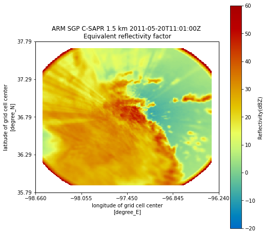
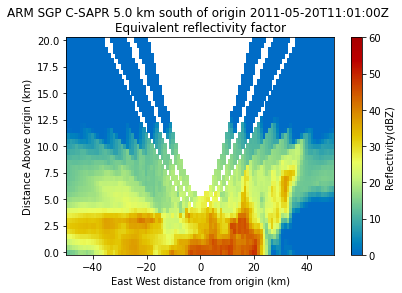
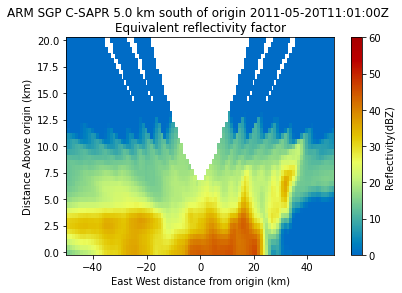

Mapping Data to a Cartesian Grid¶
[1]:
# In this notebook, we will show how to map data in Antenna coordinates to
# a Cartesian grid using Py-ART's map submodule.
[2]:
# First import needed modules
import matplotlib.pyplot as plt
import numpy as np
import pyart
## You are using the Python ARM Radar Toolkit (Py-ART), an open source
## library for working with weather radar data. Py-ART is partly
## supported by the U.S. Department of Energy as part of the Atmospheric
## Radiation Measurement (ARM) Climate Research Facility, an Office of
## Science user facility.
##
## If you use this software to prepare a publication, please cite:
##
## JJ Helmus and SM Collis, JORS 2016, doi: 10.5334/jors.119
[3]:
# Read the data that is in antenna coordinates.
radar = pyart.io.read("110635.mdv")
[4]:
# Py-ART has the Grid object which has characteristics that are similar to that of the
# Radar object, except that the data are stored in Cartesian coordinates instead of the
# radar's coordinates. Much like the Radar object, the fields are accessible by simply
# accessing grid.fields['field_name']['data'], and the object contains parameters such as the
# radar's location and projection.
[5]:
# We can create a Grid object from a Radar object by using pyart.map.grid_from_radars()
# Grid shape is the amount of points within a dimension. Grid limits is the dimension limits
# in meters.
grid = pyart.map.grid_from_radars(radar, grid_shape=(41, 201, 201),
grid_limits=((0.,20000,), (-100000., 100000.), (-100000, 100000.)))
c:\users\sherm\documents\dev\pyart\pyart\map\gates_to_grid.py:160: DeprecationWarning: Barnes weighting function is deprecated. Please use Barnes 2 to be consistent with Pauley and Wu 1990.
warnings.warn("Barnes weighting function is deprecated."
[6]:
# If with look at the coordinate data, we can see we have 201 points between
# -100000 and 100000 meters.
grid.x['data']
[6]:
array([-100000., -99000., -98000., -97000., -96000., -95000.,
-94000., -93000., -92000., -91000., -90000., -89000.,
-88000., -87000., -86000., -85000., -84000., -83000.,
-82000., -81000., -80000., -79000., -78000., -77000.,
-76000., -75000., -74000., -73000., -72000., -71000.,
-70000., -69000., -68000., -67000., -66000., -65000.,
-64000., -63000., -62000., -61000., -60000., -59000.,
-58000., -57000., -56000., -55000., -54000., -53000.,
-52000., -51000., -50000., -49000., -48000., -47000.,
-46000., -45000., -44000., -43000., -42000., -41000.,
-40000., -39000., -38000., -37000., -36000., -35000.,
-34000., -33000., -32000., -31000., -30000., -29000.,
-28000., -27000., -26000., -25000., -24000., -23000.,
-22000., -21000., -20000., -19000., -18000., -17000.,
-16000., -15000., -14000., -13000., -12000., -11000.,
-10000., -9000., -8000., -7000., -6000., -5000.,
-4000., -3000., -2000., -1000., 0., 1000.,
2000., 3000., 4000., 5000., 6000., 7000.,
8000., 9000., 10000., 11000., 12000., 13000.,
14000., 15000., 16000., 17000., 18000., 19000.,
20000., 21000., 22000., 23000., 24000., 25000.,
26000., 27000., 28000., 29000., 30000., 31000.,
32000., 33000., 34000., 35000., 36000., 37000.,
38000., 39000., 40000., 41000., 42000., 43000.,
44000., 45000., 46000., 47000., 48000., 49000.,
50000., 51000., 52000., 53000., 54000., 55000.,
56000., 57000., 58000., 59000., 60000., 61000.,
62000., 63000., 64000., 65000., 66000., 67000.,
68000., 69000., 70000., 71000., 72000., 73000.,
74000., 75000., 76000., 77000., 78000., 79000.,
80000., 81000., 82000., 83000., 84000., 85000.,
86000., 87000., 88000., 89000., 90000., 91000.,
92000., 93000., 94000., 95000., 96000., 97000.,
98000., 99000., 100000.])
[7]:
# In Py-ART's graphing suite, there is a display class similar to RadarMapDisplay,
# but for grids. To plot the grid:
fig = plt.figure(figsize=[8, 8])
display = pyart.graph.GridMapDisplay(grid)
display.plot_grid('reflectivity', level=3, vmin=-20, vmax=60)
C:\Users\sherm\Anaconda3\envs\pyart_env\lib\site-packages\cartopy\mpl\geoaxes.py:782: MatplotlibDeprecationWarning: Passing the minor parameter of set_xticks() positionally is deprecated since Matplotlib 3.2; the parameter will become keyword-only two minor releases later.
return super(GeoAxes, self).set_xticks(xticks, minor)
C:\Users\sherm\Anaconda3\envs\pyart_env\lib\site-packages\cartopy\mpl\geoaxes.py:829: MatplotlibDeprecationWarning: Passing the minor parameter of set_yticks() positionally is deprecated since Matplotlib 3.2; the parameter will become keyword-only two minor releases later.
return super(GeoAxes, self).set_yticks(yticks, minor)

[8]:
# We can even do both longitudnal and latitudnal slices. Change the lat parameter to view
# different portions of the storm!
display.plot_latitude_slice('reflectivity', lat=36.75, vmin=0, vmax=60)
plt.xlim([-50, 50])
[8]:
(-50.0, 50.0)

[9]:
# As you can see, this Grid suffers from gaps in data as well as artificial "feathers" near the
# top that are simply the result of projecting the data to Cartesian coordinates. We would like
# to eliminate these as much as possible. Thankfully, Py-ART let's us, on top of specifying the grid
# resolution, also place in a custom radius of influence which controls how many points surrounding
# the gate are factored into the interpolation. We can also change the weighting function used to
#'nearest neighbor', 'barnes' or 'cressman'. Let's try increasing the minimum radius of influence to 1.75 km
# and use Cressman as the weighting function.
grid_better = pyart.map.grid_from_radars(
radar, grid_shape=(41, 201, 201),
grid_limits=((0.,20000,), (-100000., 100000.), (-100000, 100000.)),
roi_func='dist_beam', min_radius=1750.0, weighting_function='cressman')
[10]:
# As you can see, most of the artifacts at higher altitudes have been smoothed out, but we
# have lost some spatial resolution as a result.
display = pyart.graph.GridMapDisplay(grid_better)
display.plot_latitude_slice('reflectivity', lat=36.75, vmin=0, vmax=60)
plt.xlim([-50, 50])
[10]:
(-50.0, 50.0)
